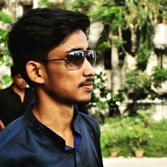
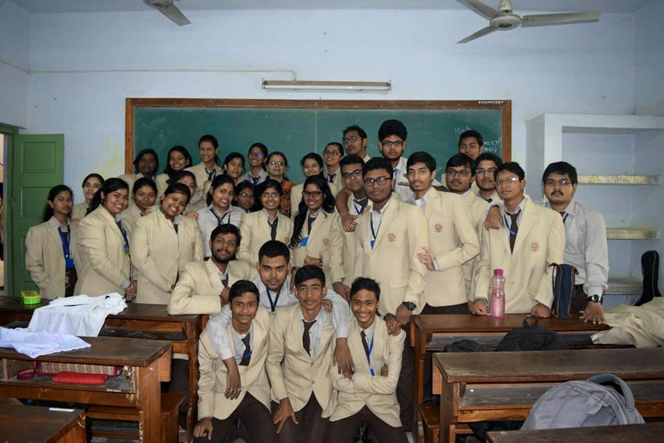
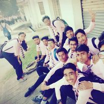
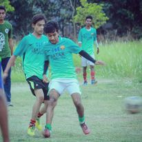

About Myself

Personal info
I, Sayandeep Maity,was born on 19th July,1999 in Haldia,West Bengal in an average middle class family to Mr. Sakti Pada Maity and mother Mrs. Tanusri Maity. My father works in a Goverment funded private Engineering college (Haldia Institute of Technology) and my mother is a housewife taking care of our family singley handedly.We were basically a nuclear family but rest of our family members were all in touch to each other. Hence I grew up in somewhat ina joined-nuclear type of family. In a nutshell taking my father's brothers and cousin we litterally used to live a small locality as we say with nearly 50 members. So my childhood was mostly with my cousins and uncle aunty and it was a joyous cheerfull just i was living my the best part of my life probably. Then as usually you are put in a school and suddenly all your happiness come to a hault.
Educational Details
I started my schooling in a municipality funded school, Poura Pathbhaban. I continud my studies there till class 3. During this time I was not quite a bad students, I also came topper of my class few times and was continuing my studies in English Medium. As my parents saw the inborn talent in me and I was put in a convent school, St. Xaviers School,Haldia (presently known as DAV School, Haldia) in my class 4. Most of my school memories belong to the classroom of this school. As all of you know transformation from a municipality schoolto a convent school was quite not a good experience. But I was determined and made some good friends and was able to become one of them. I completed my SSC and HSC both from St. XaviersSchool, Haldia in 2015 and 2017 respectively with 1st class marks in both exams. At a very young age I was quite fond of technology specially computers, so you can basically say it was dream to be an engineer and that to in the field of computer field. After class 12 I gave my entrance exam and had a quite good result to be placed in my dad college in Computer Science and Engineering Department. Then started one of the biggest and exciting journey of my life.
College Life
My college was pretty near to my house, so basically I never got the taste of hostel Life. But I wa squite lucky of having some good friends in college, well saying friend would be a disrespect to them, they are just like family members. I also came across a lot of good professors in my life who helped me a lot during my course of B.Tech. I got to learn a lot of new things from them. well there is nothing much to say about my college life it was inetresting and joyous but as it was very close to my house and my dad used to work there I really had which most of you might think i would be doing. It was not boring but nothing really exciting happened other than my placement yje foremost reason why everyone was there for and I was one of the lucky guy to be placed in the top IT industry of India Tata Consultancy Services(commonly know as TCS). I was also placed in Cognizant Technology Solutions
Hobbies
The first love of my life is MESSI. I am a great fan of him and one the idol of my life. So hence I used to love football. It was because of him I started to play football. The first time I started to play was in my school. Comming to college I also used to find some time to play and is a part of my departmental football team. I really have great memories to play football in college probably the best things happens in my college. Football is something I can never leave in my life and till now i stay 4AM and 5AM to see spanish and english league. Other than this I am a quite fan of computer games. Well its not only PUBGM I also play lot of other games , but as this game is in peak at this time I spent of the time in this game, though I am still a noob here.